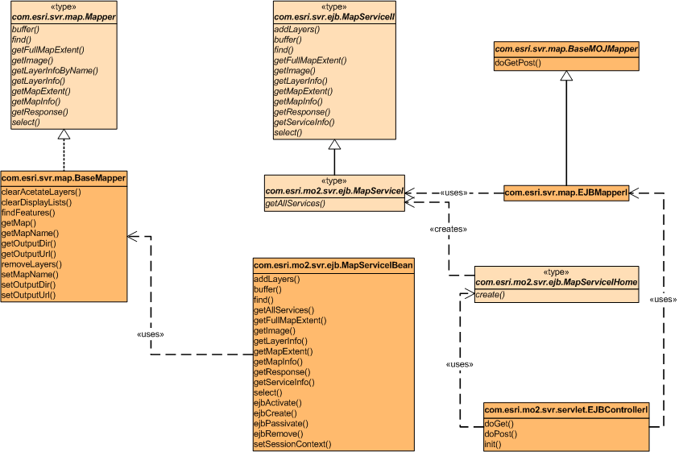
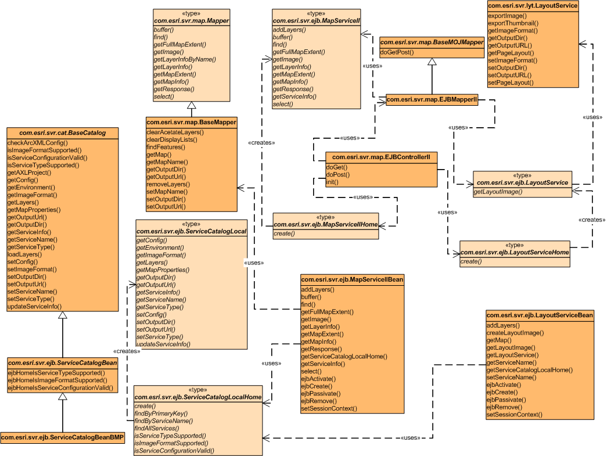

Provides controller classes for JSP, SimpleEJB, and AdvancedEJB viewers
and also Web-based AdvancedEJB admin tool. This packages all the controller
classes for JSP (ServletController for JspServeltViewer), SimpleEJB (EJBControllerI),
and AdvancedEJB (EJBControllerII) viewers and also Web-based AdvancedEJB
admin tool (CatalogServlet).
Class Diagram of the Package Interfaces and Classes
CatalogServlet (connector for Web-based AdvancedEJB Admin tool, right
side)

ServletController (for JspServletViewer, middle-bottom)

EJBControllerI (for SimpleEJB, right-bottom)

EJBControllerII (for AdvancedEJB, right-middle)

Click the diagrams to see printer friendly versions.